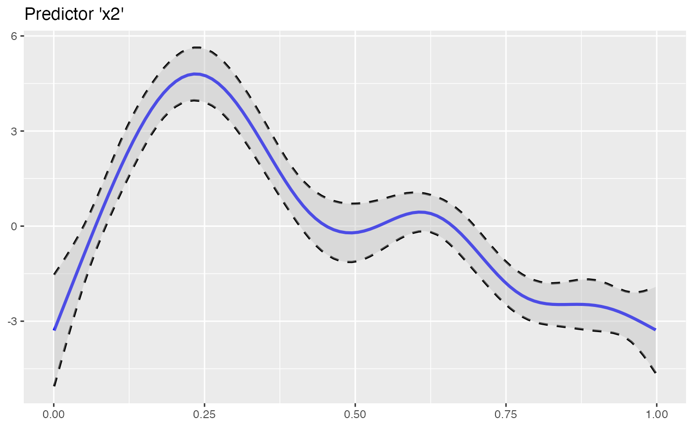

Plots the smoothing function of GAM(M) predictors via ggplot2
plot_gam( model = NULL, pred = NULL, col_line = "blue", ci_line_col = "black", ci_line_type = "dashed", ci_fill = "grey", ci_alpha = 0.4, ci_line_size = 0.8, sm_fun_size = 1.1, title = NULL, xlab = NULL, ylab = NULL, limits_y = NULL, breaks_y = NULL )
| model | A fitted model of class |
|---|---|
| pred | Predictor name. |
| col_line | Smoothing function line color. |
| ci_line_col | Confident interval line color. |
| ci_line_type | Linetype of confidence interval. |
| ci_fill | Fill color of area between smoothing function and its confidence interval lines. |
| ci_alpha | Opacity value of confidence interval. |
| ci_line_size, sm_fun_size | Line sizes. |
| title | Plot title. |
| xlab | x-axis title. |
| ylab | y-axis title. |
| limits_y | y-axis limits. |
| breaks_y | y-axis breaks. Values are handed over to a |
library(oddsratio) library(mgcv) fit_gam <- mgcv::gam(y ~ s(x0) + s(I(x1^2)) + s(x2) + offset(x3) + x4, data = data_gam ) plot_gam(fit_gam, pred = "x2", title = "Predictor 'x2'")